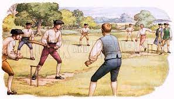

Cricket is a bat-and-ball game played between two teams of eleven players on a field at the centre of which is a 22-yard (20-metre) pitch with a wicket at each end, each comprising two bails balanced on three stumps. Two players from the batting team (the striker and nonstriker) stand in front of either wicket, with one player from the fielding team (the bowler) bowling the ball towards the striker's wicket from the opposite end of the pitch. The striker's goal is to hit the bowled ball and then switch places with the nonstriker, with the batting team scoring one run for each exchange. Runs are also scored when the ball reaches or crosses the boundary of the field or when the ball is bowled illegally(each "over" being a set of 6 fair opportunities for the batting team to score) and the game generally lasting three to four hours, to Test matches played over five days. Traditionally cricketers play in all-white kit, but in limited overs cricket they wear club or team colours. In addition to the basic kit, some players wear protective gear to prevent injury caused by the ball, which is a hard, solid spheroid made of compressed leather with a slightly raised sewn seam enclosing a cork core layered with tightly wound string.
Cricket starts from somewhere around the dark ages. Cricket originally belongs to England because cricket was first played in the south-east England. Cricket is now the national game of England and now is spreading all over the world and mostly in Australia, India, Pakistan, and the West indies. Cricket is known to be possibly start in the 13th century. At that time when cricket was invented there were no ‘Bat’ so the cricket at that time was played with hockey sticks and the ball was known as a rock or a stone. There was a place in England known as The Kent and the first official match was against The Kent and the All England in 1744. Then by the time cricket moved to the Lords Cricket Ground and in 1814 Lords became the main headquarters of the international cricket. The first English touring teams overseas went in 1859. Cricket developed over years as ball was used except stone and bat was used except hockey sticks.
The highest standard is Test cricket (always written with a capital "T") which is in effect the international version of first-class cricket and is restricted to teams representing the twelve countries that are full members of the ICC (see above). Although the term "Test match" was not coined until much later, Test cricket is deemed to have begun with two matches between Australia and England in the 1876–77 Australian season; since 1882, most Test series between England and Australia have been played for a trophy known as The Ashes. The term "first-class", in general usage, is applied to top-level domestic cricket. Test matches are played over five days and first-class over three to four days; in all of these matches, the teams are allotted two innings each and the draw is a valid result.
Most international matches are played as parts of 'tours', when one nation travels to another for a number of weeks or months, and plays a number of matches of various sorts against the host nation. Sometimes a perpetual trophy is awarded to the winner of the Test series, the most famous of which is The Ashes. The ICC also organises competitions that are for several countries at once, including the Cricket World Cup, ICC T20 World Cup and ICC Champions Trophy. A league competition for Test matches played as part of normal tours, the ICC World Test Championship, had been proposed several times, and its first instance began in 2019. A league competition for ODIs, the ICC Cricket World Cup Super League, began in August 2020 and lasted only for one edition. The ICC maintains Test rankings, ODI rankings and T20 rankings systems for the countries which play these forms of cricket. Competitions for member nations of the ICC with Associate status include the ICC Intercontinental Cup, for first-class cricket matches, and the World Cricket League for one-day matches, the final matches of which now also serve as the ICC World Cup Qualifier. The game's only appearance in an Olympic Games was the 1900 Olympics.However, it is scheduled to make a return, with the T20 format of the game, in the 2028 Summer Olympics in Los Angeles
First-class cricket in England is played for the most part by the 18 county clubs which contest the County Championship. The concept of a champion county has existed since the 18th century but the official competition was not established until 1890.The most successful club has been Yorkshire, who had won 32 official titles (plus one shared) as of 2019.The other ICC full members have national championship trophies called the Ahmad Shah Abdali 4-day Tournament (Afghanistan); the National Cricket League (Bangladesh); the Ranji Trophy (India); the Inter-Provincial Championship (Ireland); the Plunket Shield (New Zealand); the Quaid-e-Azam Trophy (Pakistan); the Currie Cup (South Africa); the Premier Trophy (Sri Lanka); the Shell Shield (West Indies); and the Logan Cup (Zimbabwe).